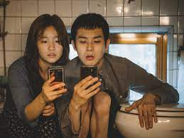

Choi Woo-shik (en hangul, 최우식; Seúl, 26 de marzo de 1990) es un actor surcoreano, conocido por sus papeles en series de televisión como Rooftop Prince y Hogu's Love.
Posteriormente, ha coprotagonizado películas como Train to Busan (2016) y Parásitos (2019) con las que ha tenido gran éxito y ha recibido la aclamación de la crítica internacional
Cho Yeo-jeong
Yeon-kyo
Cho Yeo-jeong (en hangul, 조여정) (Seúl, 10 de febrero de 1981), también puede aparecer escrito como Jo Yeo-jeong, es una actriz surcoreana.
Es conocida principalmente en el cine surcoreano por sus papeles principales en las películas de época The Servant (2010) y The Concubine (2012), así como por protagonizar la serie de televisión I Need Romance (2011). En 2019, se unió al elenco protagonista de la película Parásitos, ganadora de varios premios Óscar.
Park So Dam
Ki-jung
Park So-dam (Seúl; 8 de septiembre de 1991) es una actriz surcoreana, conocida en particular por su papel de Kim Ki-jung / Jessica en la película Parásitos.
Es conocida como una artista prolífica en títulos de cine independiente; fue la protagonista durante el Korean Academy of Film Arts con Ingtoogi: Battle of the Internet Trolls y Steel Cold Winter, que llamó la atención cuando se estrenó en el Festival Internacional de Cine de Busan.
Song Kang-ho
Ki-taek
Song Kang-ho (en hangul, 송강호; Gimhae, Corea del Sur, 17 de enero de 1967) es un actor surcoreano.1 Se graduó de la Universidad Busan Kyungsang con una licenciatura en radiodifusión, pero comenzó su carrera en grupos de teatro sin preparación profesional como actor. Hizo su debut en 1991 en la obra Dongseung.
A principios de 2000, Song obtuvo su primer papel protagonista en el éxito de taquilla The Foul King de Kim Ji-woon, en la cual supuestamente hizo la mayoría de sus escenas de riesgo.
TRAMA

Infiltración
Los Kim se infiltran en la vida de los Park, desencadenando eventos impredecibles.